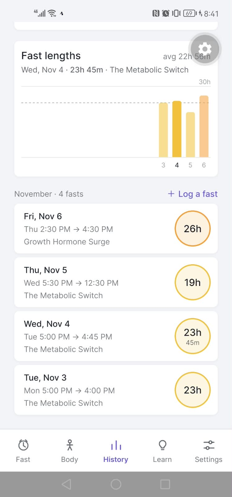
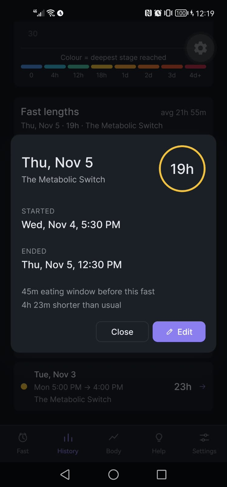
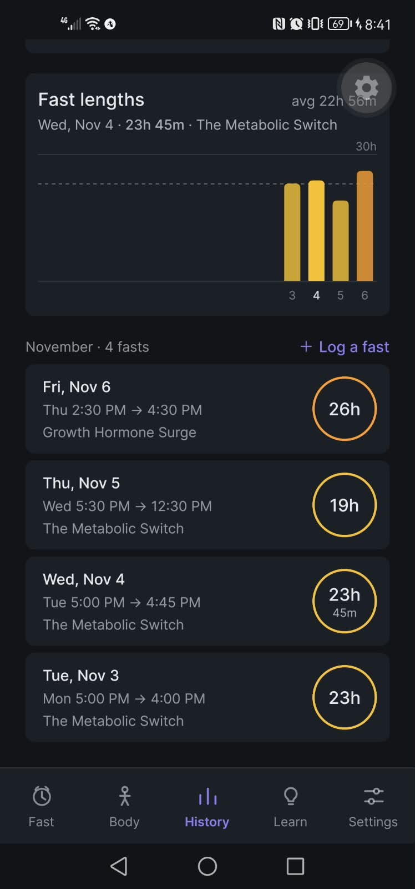

Fastline
A calm fasting tracker that keeps everything on your phone. No account, no ads, no tracking. Start a fast with one tap and see what's happening in your body as the hours go by.
A look inside



What it does
- One button to start and stop a fast. The timer keeps going even if you close the app or restart your phone.
- Fast lengths from 12:12 to OMAD, plus a 72-hour extended fast with its own safety guidance.
- Body timeline showing what's typically happening hour by hour, with each stage labelled by how strong the evidence is.
- History with a month calendar, a forgiving streak and a fast length chart.
- Learn: 54 plain-language answers to common fasting questions, all searchable.
- Private by design: nothing is sent anywhere. Your data stays on your phone.
How to join the test
Google Play needs testers to stay opted in for 14 days before Fastline can launch, so every tester really helps. You'll need an Android phone and the Google account you use for Play.
-
Join the testers group
Join the Fastline testers Google Group with the same Google account you use on your phone.
-
Opt in on Google Play
Open the testing page and tap "Become a tester". It can take a few minutes after joining the group before this works.
-
Install Fastline from Play
Download it from the Play Store link on the testing page, then open it at least once.
-
Keep it installed for 14 days
Use it as much or as little as you like. Uninstalling early means you stop counting as a tester.
Found a bug or have an idea? Use "Send feedback" on Fastline's Play Store page. It goes straight to the developer, and every note is read.
Fastline is not medical advice and is for adults only. Talk to a doctor before fasting if you're pregnant or breastfeeding, have diabetes, a history of disordered eating, or any heart, liver or kidney condition. Read the full safety notes.